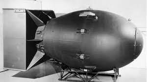

Perang Dunia II terjadi pada kurun waktu 1939–1945. Penyebab dari perang ini secara umum dikarenakan adanya konflik ideologi di antara negara-negara Eropa, Amerika, dan Asia. Peristiwa itu ditandai dengan berbagai aksi unjuk kekuatan maupun ekspansi militer terhadap wilayah-wilayah tertentu.
Sebagian besar negara-negara yang turut terlibat dalam perang tersebut akhirnya terkena dampak di bidang militer, sosial, budaya, politik, ekonomi, dan sebagainya.
Berikut ulasannya mengenai penyebab, negara-negara yang terlibat, jalannya peperangan, dan dampaknya bagi Indonesia.
Salah satu faktor yang menyebabkan rangkaian peperangan tersebut adalah adanya pemikiran mengenai fasisme. Saat itu, tiga negara yang berideologi fasisme beraliansi dengan nama Poros Roma-Berlin-Tokyo (Italia, Jerman, dan Jepang).
Kendati memiliki perbedaan pedoman mengenai ideologi tersebut, tetapi semuanya mengarah kepada tindakan merendahkan bangsa lain. Hal inilah yang menyebabkan ketiganya berusaha untuk menduduki wilayah dari negara-negara lain.
Faktor kedua yang menyebabkan meletusnya Perang Dunia II adalah kebijakan Appeasement (politik asalkan kamu senang–red) dari Imperium Britania dan Prancis. Kebijakan ini mengibaratkan mereka mengalah terhadap tindakan-tindakan Jerman. Namun, upaya tersebut ternyata tidak cukup memberikan rasa puas kepada pihak Jerman.
Perang Dunia II dimulai ketika Jerman dengan prinsip fasisnya menginvasi Polandia tanggal 1 September 1939. Imperium Britania dan Prancis dengan terpaksa menyatakan perang dan menanggalkan prinsip mengalahnya tersebut.Sejak saat itu, negara-negara lain juga mulai terlibat dalam pertempuran skala besar, karena Jerman semakin membabi buta ingin menguasai wilayah lain.Namun, Jerman tidak hadir sendirian. Italia telah menjadi aliansinya sejak akhir 1936 hingga awal 1941, melalui serangkaian perjanjian. Lalu, diikuti dengan masuknya Jepang pada Desember 1941. Jepang bergabung dengan Blok Poros untuk menyerang Amerika Serikat dan teritori Eropa di Samudra Pasifik dan sebagian besar Pasifik Barat.Ketiga negara itu kemudian terlibat perang melawan Blok Sekutu yang berjumlah lebih banyak, di antaranya adalah Imperium Britania, Prancis, Uni Soviet, Amerika Serikat, Pemerintahan Nasionalis Republik Tiongkok, Belanda, Polandia, dan beberapa negara lain yang memperoleh dampak dari pendudukan Blok Poros.
Penyebab Terjadinya Perang Dunia Ke II
Sebab umum terjadinya Perang Dunia, sebagai berikut: Kegagalan Liga Bangsa-Bangsa (LBB) dalam menciptakan perdamaian dunia Adanya perlombaan senjata Terjadinya Malaise (krisis ekonomi) Berkembangnya ideologi totaliter dan ultranasionalisme. Ideologi totaliter yang berkembang seperti Nazisme di Jerman dengan semboyannya Lebensraum, fasisme di Italia dengan semboyannya Irredenta, dan Jepang dengan semangat Hakko Ichi U. Adanya politik aliansi mencari kawan persekutuan Pertentangan antarnegara atau pertempuran antarnegara untuk memperebutkan wilayah. Adanya politik balas dendam (revanche idea) Jerman terhadap Perancis, karena Jerman merasa dihina dengan Perjanjian Versailles. Secara khusus, Perang Dunia II meletus karena serangan yang dilancarkan oleh Jerman terhadap Danzig, di Polandia pada 1 September 1939 yang dikenal dengan sebutan blitzkrieg (serangan kilat). Perang Dunia 2 berakhir setelah enam tahun berjalan. Pada 1945, Jerman menyatakan menyerah kepada Sekutu dan Hitler ditemukan tewas di bunker miliknya. Sementara itu, Mussolini yang merupakan seorang politisi yang dikenal sebagai diktator fasis Italia antara 1925-1945, dihukum mati di Itali. Kemudian Jepang mendapat serangan bom atom secara mendadak di atas Hiroshima dan Nagasaki. Setelah Perang Dunia II berakhir, diadakan perjanjian damai antara negara-negara yang bertikai. Perjanjian tersebut antara lain: Perjanjian Postdam, perjanjian kesepakatan antara Amerika Serikat, Uni Soviet, dan Inggris untuk menentukan nasib Jerman pasca Perang Dunia II. Dilakukan pada 17 Juli hingga 2 Agustus 1945 Perjanjian San Fransisco, perjanjian damai antara Sekutu dan Jepang pada 8 September 1951. Perjanjian Paris, perjanjian antara Sekutu, Italia, Romania, Hongaria, Finlandia, dan Bulgaria pada 1947.
1. Adolf Hitler
Nama besar Partai Nazi tidak lepas dari sosok pemimpinnya, Adolf Hitler. Hingga saat ini, Adolf Hitler tercatat sebagai seorang pemimpin yang kejam dan diktator. Bahkan ada jutaan orang Yahudi di Jerman yang dibantai secara tidak manusiawi di bawah kekuasaannya.
Adolf Hitler lahir pada 20 April 1889. Sejak tahun 1933 ia menjabat sebagai Kanselir Jerman. Selama itu, ia menciptakan berbagai kebijakan yang condong pada supremasi yang menganggap bahwa ras bangsanya lebih tinggi dibandingkan dengan ras-ras lainnya di dunia.
Selain itu, invasi Jerman ke beberapa negara Barat merupakan perintah dari Hitler. Pada September 1939, ia memerintahkan Angkatan Darat Jerman untuk menginvasi Polandia. Invasi tersebut menjadi awal dari Perang Dunia II. Selanjutnya di tahun 1941, atas perintah Hitler, Jerman kemudian berhasil menduduki sebagian besar Eropa dan Afrika Utara.
Kemunduran Hitler terjadi ketika Jerman kalah saat hendak menginvasi Uni Soviet pada tahun 1942.
Setelah itu, Jerman mengalami kekalahan lagi atas Amerika Serikat. Hingga pada 30 April 1945, Hitler memutuskan untuk mencabut nyawanya sendiri dengan menembak kepalanya di dalam markas pertahanan terakhirnya di Berlin.
2. Benito Mussolini
Tokoh selanjutnya adalah Benito Mussolini, pemimpin salah satu negara blok Poros, Italia. Ia lahir pada 29 Juni 1883 dan diketahui menjadi teman akrab Hitler. Karena kedekatannya dengan Hitler, Benito Mussolini bersama dengan negara yang ia pimpin, terseret dalam PD II. Ia bersama dengan Hitler membentuk suatu aliansi pada tahun 1937.
Akan tetapi aliansi yang ia bentuk bersama dengan Hitler itu kemudian mengalami kekalahan pada tahun 1943. Mereka kalah dari Yunani, Afrika, dan Uni Soviet. Setelah kekalahan tersebut, Italia kemudian diserbu oleh pasukan Britania Raya dan Amerika Serikat.
3. Kaisar Hirohito
Masih dengan pemimpin negara blok Poros, kali ini tokoh yang berpengaruh dalam PD II adalah pemimpin negara Jepang, yaitu Kaisar Hirohito. Hirohito berkuasa di Jepang sejak 1926 hingga 1989. Ia tercatat sebagai kaisar yang paling lama berkuasa di Jepang.
Sama seperti negara blok Poros lainnya, Jepang di bawah kepemimpinan Kaisar Hirohito juga melakukan penyerangan kepada negara blok Sekutu. Di antaranya, pada tahun 1941 Jepang menyerang Pearl Harbour.
Akhir dari invasi Jepang terjadi ketika dua kota Jepang, yaitu Nagasaki dan Hiroshima dijatuhi bom atom oleh Sekutu. Jepang kemudian secara resmi mengaku kalah terhadap Sekutu pada 15 Agustus 1945.
4. Joseph Stalin
Joseph Stalin merupakan tokoh pertama yang memperkenalkan paham komunis kepada dunia. Ia sempat menjabat sebagai Sekretaris Jenderal Partai Komunis Uni Soviet selama 30 tahun. Ia memimpin Uni Soviet sejak tahun 1929 hingga 1953. Di bawah kekuasaannya, Uni Soviet berhasil menjadi negara adidaya.
Selain Hitler, Stalin merupakan tokoh di balik invasi Jerman terhadap Polandia. Bukan hanya itu, Stalin juga berhasil melakukan invasi militer terhadap wilayah Polandia Timur, Estonia, Latvia Lithuania, Finlandia, dan sebagian wilayah Romania. Josef Stalin meninggal dunia pada 1953 setelah mengalami cedera dan perdarahan pada otak.
Harry S Truman
Harry S Truman merupakan Presiden Amerika Serikat ke-33 setelah sebelumnya menjabat sebagai wakil presiden bagi Presiden Franklin D. Roosevelt selama 82 hari. Truman menjabat sebagai presiden sejak tahun 1945 hingga 1953. Di bawah kepemimpinannya, Jepang berhasil dilumpuhkan oleh Amerika Serikat dengan menggunakan strategi menjatuhkan bom atom di Hiroshima dan Nagasaki.
1. The 88mm Gun atau yang dikenal dengan nama Acht-acht adalah senapan buatan Jerman. Senjata ini diperkenalkan pertama kali ditahun 1936 pada Perang Saudara Spanyol. Setelah pertempuran Spanyol, The 88mm Gun juga digunakan selama invasi Prancis pada tahun 1940 untuk menembak CharB1 milik Prancis dan tank Mk.II Matilda milik Inggris yang keduanya terbuat dari baja.
Dengan kemampuannya ini, The 88mm Gun menjadi salah satu senjata paling mematikan dan ditakuti oleh tentara Sekutu, para penerbang, dan pasukan tanker.
2.MG 42 Selain The 88mm Gun, Maschinengewehr 42 atau yang lebih dikenal MG 42 menjadi senjata mematikan lain yang pernah diproduksi oleh Jerman. Senjata ini dirancang oleh Nazi dan merupakan sebuah senapan mesin yang digunakan pada akhir Perang Dunia II. Senjata ini cukup mengerikan karena bisa memuntahkan 1.200 sampai 1.500 peluru per menit dengan jangkauan 1.000 meter.
Tentara Sekutu menyebut senjata ini dengan nama "Hitler's Buzz Saw", sedangkan tentara Soviet menyebutnya dengan nama "The Linoleum Ripper".
3.Hawker Hurricane adalah pesawat tempur satu awak yang diproduksi oleh Hawker Aircraft Inggris selama Perang Dunia II. Pesawat tempur ini dapat melaju dengan kecepatan 340 mph dengan ketinggian 35.000 kaki. Sesuai dengan fungsinya, pesawat ini digunakan pada tahun 1940 untuk melawan angkatan udara Jerman.
Tidak hanya cepat, pesawat Hawker Hurricane juga dipersenjatai dengan 12 senapan mesin, roket, dan bom yang membuatnya berhasil memenangkan 60 persen pertempuran melawan Jerman.
4. Granat Mk2 Granat mungkin bukan senjata yang terlalu asing, terutama kalau kamu sering menonton film dengan tema peperangan. Granat Mk2 sendiri merupakan granat yang diproduksi oleh Amerika Serikat pada tahun 1918, digunakan selama Perang Dunia II dan menjadi granat paling kuat milik US hingga tahun 1960.
Ketika diaktifkan, granat ini memiliki waktu sekitar 4 sampai 4,6 detik sebelum akhirnya meledak. Karena bentuknya, Mk2 juga dikenal dengan julukan nanas.
5.Senapan M1 Garand dirancang oleh Jenderal George S. Patton untuk Perang Dunia II dan menjadi senapan semi otomatis standar yang digunakan oleh Amerika. Salah satu keunggulan senapan ini adalah kemampuannya dalam menembak delapan putaran.
Karena kemampuan ini jugalah, senapan M1 Garand digunakan semua angkatan militer Amerika Serikat baik itu laut, darat, maupun udara. Setelah Perang Dunia II selesai, senapan ini "bertugas" pada perang Korea dan terakhir perang Vietnam di tahun 70an sebelum akhirnya pensiun.

6. Bom atom sangat terkenal, karena senjata satu ini selalu muncul dalam buku sejarah. Bom ini pernah digunakan oleh Amerika Serikat untuk menghancurkan Jepang ditahun 1945. Serangan pertama terjadi ada tanggal 6 agustus 1945, Amerika Serikat menjatuhkan bom atom pertama yang mereka sebut dengan nama "Little Boy" di Hirosima.
Meski namanya "Little Boy", tapi bom atom ini memiliki kekuatan setara 15.000 ton TNT. Serangan tidak berhenti disitu, pada 9 agustus 1945, Amerika menjatuhkan "Fat Man" yang setara dengan 21.000 ton TNT di Nagasaki dan memaksa Jepang untuk menyerahkan diri lima hari kemudian sekaligus mengakhiri Perang Dunia II.
Dulu enam senjata ini ditakuti oleh banyak negara. Namun seiring berjalannya waktu, senjata ini semakin usang dan digantikan dengan senjata lain yang bukan hanya semakin canggih tapi juga semakin mematikan.
Dampak Perang Dunia II
Perang Dunia II memberikan dampak luas di berbagai bidang. Berikut beberapa dampaknya, di antaranya:
Lahirnya PBB untuk menggantikan posisi LBB
Perekonomian dunia mengalami kekacauan
Amerika Serikat muncul sebagai negara kreditor
Jerman dan Jepang tumbuh menjadi negara industri
Mengurus pengungsi akibat perang
Menyediakan makanan bagi orang terlantar
Mengerjakan kembali tanah pertanian yang rusak akibat perang
Persaingan antara Amerika Serikat dan Uni Soviet mengakibatkan beberapa negara terpecah
Uni Soviet atau Rusia berubah menjadi kekuatan raksasa super power menjadi pesaing Amerika Serikat
Munculnya politik aliansi yang berdasarkan kepada Collective Security, sehingga timbul organisasi pakta pertahanan seperti NATO, PAKTA WARSAWA, SEATO, dan METO.